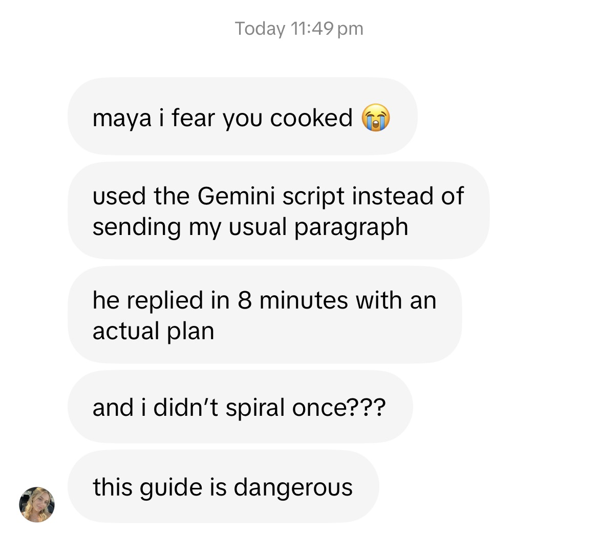

"Hey stranger" after 19 days of silence, like your phone did not just raise you as a single mother.
The brutally honest astro-bestie guide
Stop crying over a Gemini. Text him like you read the manual.
A practical copy-paste guide to dating, texting, and surviving every zodiac sign, with the exact words to send and the standards to keep.
pages
12 signs
Text scripts
Red flags
Maya says
Text him like you meant it.
The vibe
Pretty charts. Real standards.
Modern dating is doing the most
He ghosted you? Let me guess, he is an Aquarius.
He says he is "bad at labels" but somehow excellent at posting thirst traps for public relations.
We love astrology. We are still not making excuses because Mercury is in a microwave.
You do not need another vague horoscope. You need the words, the timing, and the standards.
What is inside
A sign-by-sign dating cheat sheet with actual sentences.
Built from the guide structure: Heart Key, what to say, what to do, what to avoid, date ideas, gift ideas, text templates, and healthy boundaries.
Copy-paste text scripts
Send the confident version of what you meant, without spiraling in Notes for 45 minutes.
Red flags and green lights
Know the difference between cute sign behavior and someone testing your boundaries for sport.
First-date cheat sheets
Plan dates that match their sign without trying too hard or becoming their unpaid therapist.
Every zodiac sign covered
Aries fire, Taurus comfort, Gemini chaos, Scorpio intensity, Pisces feelings. All of it.
♈ Aries
♉ Taurus
♊ Gemini
♋ Cancer
♌ Leo
♍ Virgo
♎ Libra
♏ Scorpio
♐ Sagittarius
♑ Capricorn
♒ Aquarius
♓ Pisces
What this is not
No toxic astrology. No romanticizing nonsense.
Not "he is emotionally unavailable because he is a Scorpio rising."
Not manipulation scripts dressed up as feminine energy.
Not a license to chase someone who already showed you the exit sign.
Astrology is the pattern language. Your boundaries are still the law.
Meet your astro-bestie
Maya tells you what to text before the group chat starts yelling.
She is the friend who says: send this, stop explaining, go live your life. Pretty astro, practical receipts, zero tolerance for clown behavior.
With Maya, you get:
The text when he goes vague.
The move each sign responds to.
The boundary that keeps you unbothered.
No more:
2 AM TikTok searches.
Bare minimum as "water sign energy."
Group chat essays over one dry text.
Pretty charts. Clear texts. Standards intact. 💫
Receipts from the group chat
One clean text. Actual plan. No spiral.

The choice is yours
The old routine is not working.
Close this page.
Go back to TikTok and search "why do Scorpios pull away" at 2 AM while he watches your stories.
Get the script.
Send the exact text, hold the boundary, and finally go to sleep without making his zodiac sign your emergency.
Same pattern, same pain. New script, new standard.
Instant access
A full 103-page guide for every possible dating emergency.
One checkout, one digital guide, every sign in your pocket before the next "wyd" text hits. The guide is loaded because your situationship apparently has DLC.
- Instant PDF/Notion access after payment
- 103 mobile-friendly pages, not a tiny recycled checklist
- All 12 signs in one mobile-friendly guide
- Copy-paste scripts you can use from your phone
- One-time launch price, no app to install
Real flip-through
Launch price
$17
One guide. Every sign. No emotional detective work.
Instant digital access after secure checkout.Same honesty at checkout
No fake countdowns. No "3 spots left." You are grown.
Same rule as the guide: no manipulation. If it helps, get it. If not, keep your standards anyway.
No fake scarcity. Digital guide. It does not sell out.
No panic timer. Your love life does not expire in 12 minutes.
No fake 80% off. Launch price: $17.
FAQ
Before you check out.
Is this only for Sun signs?
If you only know their Sun sign, use the guide as a practical shortcut. If you know more, look at Venus for love style, Mars for desire, and the Moon for emotional safety.
Is this manipulative?
No. The guide is about clearer communication, better dates, and stronger boundaries. Healthy attraction is not pressure.
Does this work for LGBT/queer dating?
Yes. The advice is built around communication patterns, attraction styles, date ideas, and boundaries. Use the sign guidance for any gender or relationship dynamic, then keep what fits your standards.
Is this a physical book or digital?
Digital. You get instant access to the PDF/Notion guide after payment, so you can pull up the exact text script before the group chat starts yelling.
Who is it for?
Women who are tired of confusing situationships, ghosting, vague effort, and "I am just bad at texting" as a personality trait.